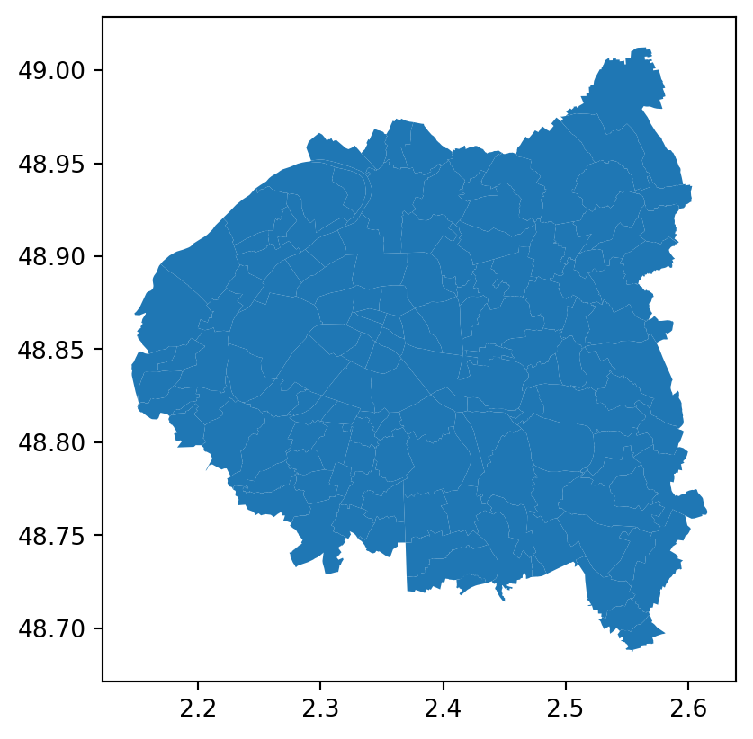
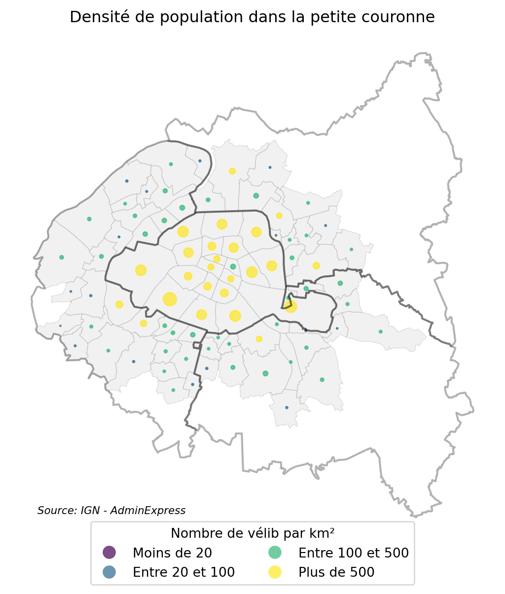

Associer des arrondissements à des données communales avec cartiflette
Important
Cette page est un work in progress! Des exemples dans d’autres langages que Python viendront ultérieurement.
Cette page fait partie d’une série de tutoriels illustrant les fonctionnalités de cartiflette. Pour retrouver la liste de ceux-ci, c’est ici.
Ce tutoriel vise à illustrer un cas d’usage classique de cartiflette : récupérer de manière flexible un fonds de carte mélangeant les niveaux administratifs différents que sont communes et arrondissements.
Ce besoin classique est illustré à travers la construction d’une carte de la disponibilité de vélibs dans la petite couronne parisienne (Paris intra-muros et départements limitrophes). L’objectif de ce tutoriel est de faire une carte du nombre de vélibs au km² dans chaque arrondissement de Paris intra-muros et chaque commune de la petite couronne. Il illustre, pas à pas, la manière dont cartiflette simplifie la création de la Figure 1 :
Pourquoi utiliser cartiflette pour ce type de besoins ?
- Beaucoup moins de ligne de code à écrire :
- Réduit le temps nécessaire avant d’obtenir une carte exploratoire, ce qui permet de se concentrer sur la construction de celle-ci plutôt que les étapes antérieures
- Réduit la difficulté à mettre à jour le code ;
- Moins de bande passante et d’espace disque utilisé car seule la donnée nécessaire est téléchargée ;
- Moindre besoin d’expertise en SIG car la librairie fournit un
GeoDataFrameprêt à l’emploi ce qui ne nécessite pas une connaissance pointue dans le domaine (système de projection, format shapefile, etc.) ; - Moins de risque d’erreur que lorsqu’on fait soi-même la combinaison de sources à des niveaux administratifs différents (accoler le masque des arrondissements à celui des communes limitrophes nécessite beaucoup de précautions) ;
- Bénéficier de métadonnées supplémentaires sur les communes que les fonds de carte
AdminExpress
Et Lyon et Marseille ?
cartiflette fournit le même découpage par arrondissement pour les villes de Lyon et Marseille. Pour cela, il suffit de demander une zone géographique englobant Lyon et Marseille, par exemple le département du Rhône ou la région Provence Alpes Côte d’Azur.
Pour en apprendre plus sur le traitement de données géographiques avec Python
Ce tutoriel présuppose une connaissance minimale de l’écosystème Python pour le traitement de données spatiales. Pour se familiariser à celui-ci, vous pouvez consulter ce cours d’Introduction à Python pour la data science de l’ENSAE ParisTech.
1 Préliminaire: récupération des localisations des stations
Les données Vélib que nous utiliserons sont récupérables directement avec GeoPandas. Il s’agit de la capacité et la localisation des stations sous la forme de latitude-longitude1
import geopandas as gpd
velib_data = "https://opendata.paris.fr/explore/dataset/velib-emplacement-des-stations/download/?format=geojson&timezone=Europe/Berlin&lang=fr"
stations = gpd.read_file(velib_data)Skipping field coordonnees_geo: unsupported OGR type: 3Ces données prennent la forme suivante:
| capacity | name | stationcode | geometry | |
|---|---|---|---|---|
| 0 | 48 | Le Brun - Gobelins | 13007 | POINT (2.35347 48.83509) |
| 1 | 20 | Beaux-Arts - Bonaparte | 6021 | POINT (2.33485 48.85645) |
et peuvent être localisées sur une carte de la manière suivante:
Voir le code pour générer la carte interactive 👇️
import folium
from folium.plugins import MarkerCluster
# 1. Calcul du centre de la carte et des bornes sw et ne
stations['lon'] = stations.geometry.x
stations['lat'] = stations.geometry.y
center = stations[['lat', 'lon']].mean().values.tolist()
sw = stations[['lat', 'lon']].min().values.tolist()
ne = stations[['lat', 'lon']].max().values.tolist()
m = folium.Map(location=center, tiles='OpenStreetMap')
marker_cluster = MarkerCluster().add_to(m)
# Add the markers to the MarkerCluster
for i in range(len(stations)):
folium.Marker(
location=[stations.iloc[i]['lat'], stations.iloc[i]['lon']],
popup=stations.iloc[i]['name']
).add_to(marker_cluster)
# Fit the map bounds to the markers
m.fit_bounds([sw, ne])
m- 1
- Cette fonctionnalité permet d’avoir une carte interactive avec zoom progressifs car le nombre de stations est important ce qui ralentirait la carte de toutes les afficher
Make this Notebook Trusted to load map: File -> Trust Notebook
Nous allons avoir besoin des contours d’arrondissements et de communes pour deux raisons:
- Localiser les stations à ce niveau d’analyse par le biais d’une jointure spatiale avant de pouvoir les agréger à ce niveau ;
- Représenter ces données sur une carte présentant Paris intra-muros et les villes limitrophes participant au système Vélib.
2 Récupérer les contours administratifs officiels l’IGN via cartiflette
2.1 La récupération des données utilisant cartiflette
Les contours administratifs officiels sont produits par l’IGN et utilisent le code officiel géographique (COG) (liste officielle des entités administratives) produit par l’Insee.
La source la plus simple pour répondre à notre besoin est AdminExpress EXPRESS-COG-CARTO-TERRITOIRE. En l’occurrence, seuls quelques espaces nous intéressent: ce sont les villes et arrondissements de la petite couronne parisienne (départements 75, 92, 93 et 94).
Avec la fonction carti_download, l’import de ces données est assez transparent:
from cartiflette import carti_download
# 1. Fonds communaux
contours_villes_arrt = carti_download(
values = ["75", "92", "93", "94"],
crs = 4326,
borders="COMMUNE_ARRONDISSEMENT",
filter_by="DEPARTEMENT",
source="EXPRESS-COG-CARTO-TERRITOIRE",
year=2022)
# 2. Départements
departements = contours_villes_arrt.dissolve("INSEE_DEP")- 1
-
4326 est le code du système de représentation WGS84 (le même que celui des données Vélib). De futures développement de
cartiflettepermettront de récupérer des données avec d’autres projections, notamment les systèmes Lambert. - 2
-
Ici on récupère seulement des départements, l’emprise la plus petite qui puisse satisfaire notre besoin. Néanmoins, il serait possible d’obtenir les données à une autre échelle géographique, par exemple la région Ile de France, en spécifiant les arguments
filter_by="DEPARTEMENT"etvalues="11". - 3
-
La construction du fonds de carte
departementsse fait simplement avec la méthodedissolve. Il nous sera utile pour contextualiser la carte.
contours_villes_arrt est un GeoDataFrame classique, il est donc possible d’appliquer à celui-ci les méthodes usuelles de GeoPandas par exemple la méthode dissolve ci-dessus. Le masque obtenu pour notre carte est celui-ci
contours_villes_arrt.plot()
Pour voir le code permettant d’obtenir un GeoDataFrame équivalent sans passer par cartiflette, vous pouvez vous rendre dans la partie Comment faire sans cartiflette ?. La section Bilan fournit quelques éléments de comparaison entre l’approche avec et celle sans cartiflette (temps de traitement, volume de données téléchargées, nombre de lignes de codes, etc.).
2.2 Le reste du travail après avoir utilisé cartiflette
La suite du travail n’est pas intrinsèquement lié à cartiflette mais correspond à de la manipulation de données spatiales.
Comme nous avons besoin de localiser les stations dans les arrondissements, nous faisons une jointure spatiale entre notre fonds de carte et nos données Vélib
stations_info = gpd.sjoin(
stations, contours_villes_arrt, predicate="within"
)Outre la localisation des stations au niveau communes ou arrondissement, cela permet d’ajouter une ribambelle de métadonnées (des informations annexes) à nos données initiales:
| capacity | name | stationcode | geometry | lon | lat | index_right | INSEE_DEP | INSEE_REG | ID | ... | AAV2020 | TAAV2017 | TDAAV2017 | CATEAAV2020 | BV2012 | LIBELLE_DEPARTEMENT | LIBELLE_REGION | PAYS | SOURCE | AREA | |
|---|---|---|---|---|---|---|---|---|---|---|---|---|---|---|---|---|---|---|---|---|---|
| 0 | 48 | Le Brun - Gobelins | 13007 | POINT (2.35347 48.83509) | 2.353468 | 48.835093 | 8 | 75 | 11 | ARR_MUNI0000000009736531 | ... | 001 | 5 | 50 | 11 | 75056 | Paris | Île-de-France | France | IGN:EXPRESS-COG-CARTO-TERRITOIRE | NaN |
| 1 | 20 | Beaux-Arts - Bonaparte | 6021 | POINT (2.33485 48.85645) | 2.334852 | 48.856452 | 4 | 75 | 11 | ARR_MUNI0000000009736543 | ... | 001 | 5 | 50 | 11 | 75056 | Paris | Île-de-France | France | IGN:EXPRESS-COG-CARTO-TERRITOIRE | NaN |
2 rows × 33 columns
Le décompte des stations par communes et arrondissements se fait alors assez aisément en utilisant la grammaire Pandas. Pour cela, il est possible d’utiliser la variable INSEE_COG construite par cartiflette pour consolider les codes communes des arrondissements et des communes2
comptes = (
stations_info
.groupby("INSEE_COG")
.agg({"capacity": "sum"})
.reset_index()
)Enfin, il ne reste plus qu’à construire la variable d’intérêt, ce qui n’est pas du travail lié à cartiflette:
Dérouler 👇️ pour voir le code permettant préparer la carte
import pandas as pd
# Conversion des variables
contours_villes_arrt["INSEE_COG"] = contours_villes_arrt["INSEE_COG"].astype(str)
comptes["INSEE_COG"] = comptes["INSEE_COG"].astype(str)
# Jointure pour retrouver la dimension géographique de nos données agrégées
comptes_velib_by_city_arrt = contours_villes_arrt.merge(
comptes, how = "inner", on = "INSEE_COG"
)
comptes_velib_by_city_arrt['densite'] = comptes_velib_by_city_arrt['capacity']
# Création des variables pour la taille de nos ronds proportionnels
df_points = comptes_velib_by_city_arrt.copy()
df_points["markersize"] = 12*df_points["densite"].div(comptes_velib_by_city_arrt.to_crs(2154).area.div(10**6).sum())
bins = [-float('inf'), 20, 100, 500, float('inf')]
labels = ["Moins de 20", "Entre 20 et 100", "Entre 100 et 500", "Plus de 500"]
df_points["markercolor"] = pd.cut(
df_points['densite'], bins=bins, labels=labels, right=True
)
# Centre de nos cercles
df_points["geometry"] = df_points["geometry"].centroid- 1
-
On force la conversion de la variable
INSEE_COGen string pour éviter le typeobjectdePandasqui peut poser des problèmes lors des jointures.
Finalement, on obtient la carte avec le code suivant
Dérouler 👇️ pour voir le code permettant de faire la carte
import matplotlib.pyplot as plt
# Create a figure and axes object
fig, ax = plt.subplots(figsize=(7, 7))
# Plot the base map
comptes_velib_by_city_arrt.plot(
ax=ax,
color="lightgray",
edgecolor="grey",
linewidth=0.4,
alpha=0.3
)
# Plot the points with customized colors and sizes
df_points.plot(
ax=ax,
column="markercolor",
markersize="markersize",
alpha=0.7,
legend=True,
legend_kwds={"loc": "upper center", "ncol": 2, "bbox_to_anchor": (0.5, 0.05)},
cmap="viridis",
)
# Plot the department boundaries
departements.boundary.plot(ax=ax, edgecolor="black", alpha=0.3)
# Remove axes and set the title
ax.axis("off")
ax.set_title("Densité de population dans la petite couronne")
# Customize the legend title
ax.get_legend().set_title("Nombre de vélib par km²")
# Add source text
plt.figtext(
0.3,
0.15,
"Source: IGN - AdminExpress",
wrap=True,
horizontalalignment="center",
fontsize=8,
style="italic",
)
# Show the final plot
plt.show()

4 Bilan
Si le fait qu’il suffise que le code de cartiflette se réduise à Listing 1 contre Listing 2, Listing 3, Listing 4, Listing 5 pour obtenir un résultat équivalent ne suffit pas, si le fait que le GeoDataFrame obtenu avec cartiflette comporte plus de métadonnées que celui créé sans ce package n’est pas non plus suffisant, la suite déroule quelques arguments supplémentaires de l’intérêt d’utiliser cartiflette.
4.1 Volume de données téléchargées
Fonction convert_size pour avoir les tailles de fichiers dans un format lisible par un humain
# Convert to a human-readable format (e.g., MB, GB)
def convert_size(size_bytes):
if size_bytes == 0:
return "0B"
size_name = ("B", "KB", "MB", "GB", "TB")
i = int(math.floor(math.log(size_bytes, 1024)))
p = math.pow(1024, i)
s = round(size_bytes / p, 2)
return f"{s} {size_name[i]}"Evaluation de la taille des fichiers issus d’AdminExpress
import math
import os
from pathlib import Path
# Path to the zipped file
zipped_file = "ADMIN-EXPRESS-COG-CARTO_3-1__SHP_WGS84G_FRA_2022-04-15.7z"
# Get the size of the zipped file in bytes
zipped_size = os.path.getsize(zipped_file)
# Path to the directory containing unzipped files
unzipped_dir = "./extracted_files"
root_directory = Path(unzipped_dir)
size_dir = sum(f.stat().st_size for f in root_directory.glob('**/*') if f.is_file())
poids_archive_compressee = convert_size(zipped_size)
poids_archive_decompressee = convert_size(size_dir)Evaluation de la taille des mêmes données issues de cartiflette
writedir = "cartiflette-data/usecase1"
os.makedirs(writedir, exist_ok=True)
contours_villes_arrt.to_file(
f"{writedir}/contours.shp"
)
poids_archive_cartiflette_bytes = os.path.getsize(f"{writedir}/contours.shp")
poids_archive_cartiflette = convert_size(
poids_archive_cartiflette_bytes
)- 1
-
On crée un shapefile avec le
GeoDataFrameobtenu depuiscartifletteafin d’avoir une comparaison honnête avec le fonds de carte issu du site de l’IGN.
La première base de comparaison possible est la taille sur disque des fonds de carte récupérés par cartiflette ou sans passer par ce package. Le code ci-dessus ☝️ permet de construire les statistiques suivantes:
- Les données
cartiflettereprésenteraient 182.23 KB si elles étaient stockées sur disque. - Sans passer par
cartiflette, on a besoin de 240.67 MB pour stocker les fonds de carte décompressés auxquels il faut ajouter 142.86 MB pour stocker l’archive compressée.
Autrement dit, les données récupérées sans cartiflette représentent 2155 fois le volume de celles exclusivement nécessaires pour cette carte.
L’arborescence du dossier décompressé est également assez conséquente: nous avons 68 fichiers. L’arborescence complète obtenue sans cartiflette est disponible ci-dessous. Avec cartiflette aucun fichier n’est écrit sur disque, tout est directement accessible dans la session Python.
Arborescence complète
extracted_files/
└── ADMIN-EXPRESS-COG-CARTO_3-1__SHP_WGS84G_FRA_2022-04-15/
├── ADMIN-EXPRESS-COG-CARTO/
│ ├── 1_DONNEES_LIVRAISON_2022-04-15/
│ │ ├── ADECOGC_3-1_SHP_WGS84G_FRA/
│ │ │ ├── ARRONDISSEMENT.cpg
│ │ │ ├── ARRONDISSEMENT.dbf
│ │ │ ├── ARRONDISSEMENT.prj
│ │ │ ├── ARRONDISSEMENT.shp
│ │ │ ├── ARRONDISSEMENT.shx
│ │ │ ├── ARRONDISSEMENT_MUNICIPAL.cpg
│ │ │ ├── ARRONDISSEMENT_MUNICIPAL.dbf
│ │ │ ├── ARRONDISSEMENT_MUNICIPAL.prj
│ │ │ ├── ARRONDISSEMENT_MUNICIPAL.shp
│ │ │ ├── ARRONDISSEMENT_MUNICIPAL.shx
│ │ │ ├── CANTON.cpg
│ │ │ ├── CANTON.dbf
│ │ │ ├── CANTON.prj
│ │ │ ├── CANTON.shp
│ │ │ ├── CANTON.shx
│ │ │ ├── CHFLIEU_ARRONDISSEMENT_MUNICIPAL.cpg
│ │ │ ├── CHFLIEU_ARRONDISSEMENT_MUNICIPAL.dbf
│ │ │ ├── CHFLIEU_ARRONDISSEMENT_MUNICIPAL.prj
│ │ │ ├── CHFLIEU_ARRONDISSEMENT_MUNICIPAL.shp
│ │ │ ├── CHFLIEU_ARRONDISSEMENT_MUNICIPAL.shx
│ │ │ ├── CHFLIEU_COMMUNE.cpg
│ │ │ ├── CHFLIEU_COMMUNE.dbf
│ │ │ ├── CHFLIEU_COMMUNE.prj
│ │ │ ├── CHFLIEU_COMMUNE.shp
│ │ │ ├── CHFLIEU_COMMUNE.shx
│ │ │ ├── CHFLIEU_COMMUNE_ASSOCIEE_OU_DELEGUEE.cpg
│ │ │ ├── CHFLIEU_COMMUNE_ASSOCIEE_OU_DELEGUEE.dbf
│ │ │ ├── CHFLIEU_COMMUNE_ASSOCIEE_OU_DELEGUEE.prj
│ │ │ ├── CHFLIEU_COMMUNE_ASSOCIEE_OU_DELEGUEE.shp
│ │ │ ├── CHFLIEU_COMMUNE_ASSOCIEE_OU_DELEGUEE.shx
│ │ │ ├── COLLECTIVITE_TERRITORIALE.cpg
│ │ │ ├── COLLECTIVITE_TERRITORIALE.dbf
│ │ │ ├── COLLECTIVITE_TERRITORIALE.prj
│ │ │ ├── COLLECTIVITE_TERRITORIALE.shp
│ │ │ ├── COLLECTIVITE_TERRITORIALE.shx
│ │ │ ├── COMMUNE.cpg
│ │ │ ├── COMMUNE.dbf
│ │ │ ├── COMMUNE.prj
│ │ │ ├── COMMUNE.shp
│ │ │ ├── COMMUNE.shx
│ │ │ ├── COMMUNE_ASSOCIEE_OU_DELEGUEE.cpg
│ │ │ ├── COMMUNE_ASSOCIEE_OU_DELEGUEE.dbf
│ │ │ ├── COMMUNE_ASSOCIEE_OU_DELEGUEE.prj
│ │ │ ├── COMMUNE_ASSOCIEE_OU_DELEGUEE.shp
│ │ │ ├── COMMUNE_ASSOCIEE_OU_DELEGUEE.shx
│ │ │ ├── DEPARTEMENT.cpg
│ │ │ ├── DEPARTEMENT.dbf
│ │ │ ├── DEPARTEMENT.prj
│ │ │ ├── DEPARTEMENT.shp
│ │ │ ├── DEPARTEMENT.shx
│ │ │ ├── EPCI.cpg
│ │ │ ├── EPCI.dbf
│ │ │ ├── EPCI.prj
│ │ │ ├── EPCI.shp
│ │ │ ├── EPCI.shx
│ │ │ ├── REGION.cpg
│ │ │ ├── REGION.dbf
│ │ │ ├── REGION.prj
│ │ │ ├── REGION.shp
│ │ │ └── REGION.shx
│ │ └── ADECOGC_3-1_SHP_WGS84G_FRA.md5
│ ├── 1_DONNEES_LIVRAISON_2022-04-15.md5
│ ├── 2_METADONNEES_LIVRAISON_2022-04-15/
│ │ ├── ADECOGC_3-1_SHP_WGS84G_FRA/
│ │ │ ├── IGNF_ADECOGC_3-1_SHP_WGS84G_FRA.html
│ │ │ └── IGNF_ADECOGC_3-1_SHP_WGS84G_FRA.xml
│ │ └── ADECOGC_3-1_SHP_WGS84G_FRA.md5
│ ├── 2_METADONNEES_LIVRAISON_2022-04-15.md5
│ └── LISEZ-MOI.pdf
└── ADMIN-EXPRESS-COG-CARTO.md54.2 Nombre de lignes de code
En ce qui concerne le temps de développement de ce code, on est sur quelques secondes pour le code avec cartiflette en utilisant la documentation interactive d’exemples contre plusieurs dizaines de minutes pour le code sans cartiflette.
4.3 Temps de traitement
Le code cartiflette permet de récupérer les éléments contextuels nécessaires en 6 secondes. Sans cartiflette, il faut 5minutes et 45 secondes. Sans cartiflette, soit un rapport de 1 à 58 pour cette tâche.
Footnotes
Le système de coordonnées WGS84 (World Geodetic System 1984) est un système de référence géodésique utilisé pour représenter les positions géographiques sur la Terre. Ce système est utilisé par la plupart des applications GPS et des fournisseurs de tuiles vectorielles comme
OpenStreetMap.↩︎La variable
INSEE_COMcorrespond au code officiel géographique au niveau communal. La valeur est donc identique pour les 20 arrondissements parisiens.↩︎
3 Comment faire sans
cartiflette?L’approche est nettement plus fastidieuse sans
cartiflette. Pour obtenir les mêmes données, prêtes à l’emploi, cela passe par quatre étapes principales:Python.La première étape consiste donc à télécharger le fichier depuis le site de mise à disposition de l’IGN. L’archive étant assez volumineuse, le code proposé propose une barre de progrès pour s’assurer que le téléchargement progresse.
Le code étant assez long, il n’est pas apparent par défaut mais il suffit de cliquer ci-dessous:
1️⃣ Code pour télécharger les données
La deuxième étape consiste à dézipper la version téléchargée en local
2️⃣ Dézipper la version téléchargée
La troisième étape consiste à importer les fonds de carte désirés. Le piège à cette étape est qu’il existe deux fonds de carte d’arrondissements: les arrondissements départementaux(subdivisions départementales) et les arrondissements municipaux (subdivisions des trois plus grandes villes françaises). Ce sont ces derniers qui nous intéressent. Ils sont livrés sous le nom de fichier
ARRONDISSEMENT_MUNICIPAL(à ne pas confondre avecARRONDISSEMENTqui correspond aux arrondissements départementaux).Les données sont livrées au format shapefile, un format propriétaire bien connu des spécialistes des SIG. Moins pratique que le GeoJSON pour les utilisateurs de
Python, il est tout de même possible de le lire directement avecGeoPandas3️⃣ Importer le bon shapefile dans Python
La 4e et dernière étape, la plus propice à faire des erreurs, est celle qui consiste à restreindre les données à notre aire d’intérêt et à superposer les masques du fonds des arrondissements municipaux avec celui des communes.
4️⃣ Consolider pour obtenir le fonds de carte désiré
INSEE_COGetINSEE_COMpour avoir des identifiants de localisation équivalents à ceux decartiflette